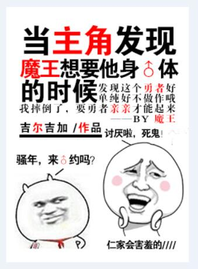

Xu Jun finalmente derrotó al BOSS, el Rey Demonio Oscuro, en este juego de realidad virtual independiente. Cuando quiso salir a navegar por Weibo y expresar su estado de ánimo, de repente se encontró con un ERROR del juego e inmediatamente pasó al mundo del juego.
Se convirtió en el hombre que finalmente derrotó al Gran Rey Demonio en este mundo. ¡Gratificante! ¡La atención de millones de personas!
...... Sin embargo, no sabía que el desarrollo de este mundo no era el mismo que el del juego, el Rey Demonio no murió, sino que su alma entró en el cuerpo de Xu Jun; Este Rey Demonio sabe todas las cosas estúpidas que Xu Jun hace todos los días…….
[Al principio, el Rey Demonio Oscuro quería el cuerpo de este héroe.] [Más tarde, el Rey Demonio Oscuro "quería" el cuerpo de este pequeño idiota.]